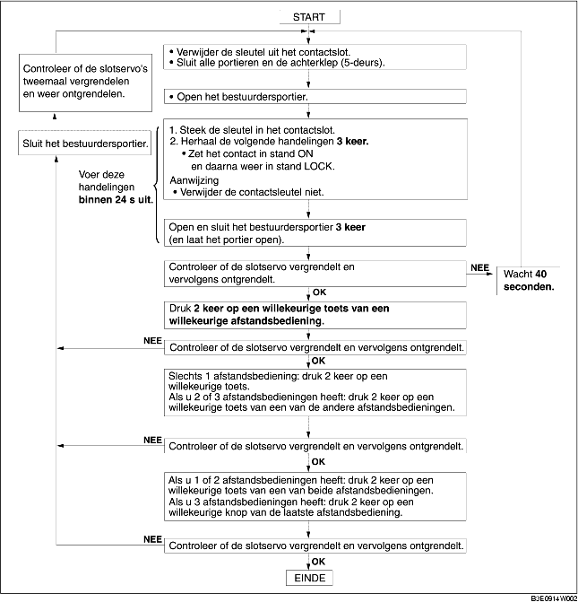

REGISTREREN IDENTIFICATIECODE AFSTANDSBEDIENING
B3E091467543W03
-
Aanwijzing
-
• Zorg dat er geen andere zenders in de buurt gebruikt worden bij het registreren van een nieuwe ID-code.
-
• Verwijder na het registreren van de ID-code de sleutel uit het contactslot en controleer of alle portieren normaal vergrendelen en ontgrendelen met de afstandsbediening.
